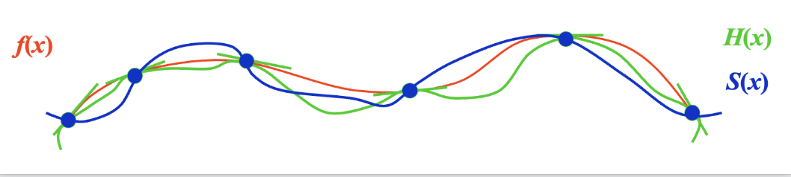

Chapter 3: Interpolation and Polynomial Approximation¶
如果函数 \(y = f(x)\) 的计算过于复杂，一种近似求解的办法是：首先在一组点序列 \(x_0, \dots, x_n\) 上获取一组函数值 \(y_0 = f(x_0), \dots, y_n = f(x_n)\)，然后根据这些值构造一个相对简单的近似函数 \(g(x) \approx f(x)\)。
如果 \(g(x)\) 满足 \(\forall\ i = 0, \dots, n, g(x_i) = f(x_i)\)，我们称 \(g(x)\) 为 \(f(x)\) 的插值函数(interpolating function),最常见的插值函数形式是代数多项式(algebraic polynomials)
3.1 Interpolation and the Lagrange Polynomial¶
找到 \(n\) 阶多项式 \(P_n(x) = a_0 + a_1 x + \dots + a_n x^n\)，使得 \(\forall\ i = 0, \dots, n, P_n(x_i) = y_i\) (对任何 \(i \ne j\)，必须满足 \(x_i \ne x_j\))
当 \(n = 1\) 时：给定 \(x_0, x_1, y_0, y_1\)，找到 \(P_1(x) = a_0 + a_1 x\)，使得 \(P_1(x_0) = y_0, P_1(x_1) = y_1\) - 此时 \(P_1(x)\) 是一个经过给定两点 \((x_0, y_0), (x_1, y_1)\) 的线函数(line function)，即： $$ \begin{align} P_1(x) & = y_0 + \dfrac{y_1 - y_0}{x_1 - x_0}(x - x_0) \notag \ & = \underbrace{\Big(\dfrac{x - x_1}{x_0 - x_1}\Big)}{\textcolor{red}{L}}(x)} y_0 + \underbrace{\Big(\dfrac{x - x_0}{x_1 - x_0}\Big){\textcolor{red}{L(x)y_i \notag \end{align} $$ 标红的项被称为}}(x)} y_1 = \sum\limits_{i=0}^1 \textcolor{red}{L_{1, i}拉格朗日基(Lagrange Basis)，满足：\(L_{1, i}(x_j) = \delta_{ij} = \begin{cases}1 & \text{if } i = j \\ 0 & \text{if } i \ne j\end{cases}\)（称为 Kronecker 符号）
当 \(n \ge 1\) 时：寻找 \(L_{n, i}(x)\ (i = 0, \dots, n)\)，使得 \(L_{n, i} (x_j) = \delta_{ij}\)；然后令 \(P_n(x) = \sum\limits_{i=0}^n L_{n, i}(x) y_i\)，因此 \(P_n(x_i) = y_i\)
每个 \(L_{n, i}\) 都有 \(n\) 个根 \(x_0 \dots \widehat{x_i} \dots x_n\)，可得： $$ L_{n, i}(x) = C_i (x - x_0) \dots (\widehat{x - x_i}) \dots (x - x_n) = C_i \prod\limits_{\substack{j \ne i \ j = 0}}^n (x - x_j) $$ 当 \(L_{n, i}(x_i) = 1\) 时，\(C_i = \prod\limits_{j \ne i} \dfrac{1}{x_i - x_j}\) $$ L_{n, i}(x) = \prod\limits_{\substack{j \ne i \ j = 0}}^n \dfrac{(x - x_j)}{(x_i - x_j)} \Rightarrow P_n(x) = \sum\limits_{i=0}^n L_{n, i}(x) y_i $$ 这里的 \(P_n(x)\) 就是n 阶拉格朗日插值多项式(n-th Lagrange interpolating polynomial)。
[!theorem] 定理 如果 \(x_0, x_1, \dots, x_n\) 是 \(n + 1\) 个不同的数，且用函数 \(f\) 得到这 \(n + 1\) 个数对应的函数值，那么最终得到的 n 阶多项式就是唯一的（和具体的构造方法无关）
[!proof] 证明 （反证法）如果不是唯一的，那么存在两个多项式 \(P_n(x)\) 和 \(Q_n(x)\)，它们都满足插值条件。可以得到一个多项式 \(D(x) = P_n(x) - Q_n(x)\)，阶数 \(\le n\)。但 \(D(x)\) 有 \(n + 1\) 个不同的根 \(x_0, x_1, \dots, x_n\)，这和阶数条件矛盾。因此假设不成立。
分析余项(remainder) - 假如 \(a \le x_0 < x_1 < \dots < x_n \le b\) 且 \(f \in C^{n+1} [a, b]\)。考虑截断误差 \(R_n(x) = f(x) - P_n(x)\)
[!theorem] 罗尔定理 如果 \(\varphi(x)\) 足够平滑，且 \(\varphi(x_0) = \varphi(x_1) = 0\)，那么 \(\exists \xi \in (x_0, x_1)\)，使得 \(\varphi'(\xi) = 0\)。
一般来说，如果 \(\varphi(x_0) = \varphi(x_1) = \varphi(x_2) = 0\)，那么 \(\exists \xi_0 \in (x_0, x_1), \xi_1 \in (x_1, x_2)\)，使得 \(\varphi'(\xi_0) = \varphi'(\xi_1) = 0\)，那么 \(\exists \xi \in (\xi_0, \xi_1)\)，使得 \(\varphi''(\xi) = 0\)
同理，\(\varphi(x_0) = \dots = \varphi(x_n) = 0 \Rightarrow \exists \xi \in (a, b)\)，使得 \(\xi^{(n)}(\xi) = 0\)
\(R_n(x)\) 至少有 \(n + 1\) 个根 \(\Rightarrow R_n(x) = K(x) \prod\limits_{i=0}^n (x - x_i)\) 接下来计算 \(K (x\)): 1. 对任意一个 \(x \ne x_i\ (i = 0, \dots, n)\)，引入修正函数为 \(g(t)\), \(t \in [a, b]\)： $$ g(t) = R_n(t) - K(x) \prod\limits_{i=0}^n (t - x_i) $$ 2. \(g(x)\) 有 \(n + 2\) 个不同的根 \(x_0, \dots, x_n, x\ \Rightarrow g^{(n+1)}(\xi_x) = 0, \xi_x \in (a, b)\) $$ \begin{align} & f^{(n+1)}(\xi_x) - \cancel{P_n^{(n+1)}(\xi_x)} - K(x)(n+1)! = R_n^{(n+1)}(\xi_x) - K(x)(n+1)! \notag \ & \Rightarrow K(x) = \dfrac{f^{(n+1)}(\xi_x)}{(n+1)!} \notag \end{align} $$ 因此 \(R(x) = \dfrac{f^{(n+1)}(\xi_x)}{(n+1)!} \prod\limits_{i=0}^n (x - x_i)\)
[!note] 注 - 大多数情况下 \(\xi_x\) 无法确定，因此会计算 \(f^{(n+1)}\) 的上界, 即一个估计值 \(M_{n+1}\)，满足 \(\forall\ x \in (a, b),\ |f^{(n+1)}(x)| \le M_{n+1}\)，并且取 \(\dfrac{M_{n+1}}{(n+1)!} \prod\limits_{i=0}^n |x - x_i|\) 为总误差的上界。 - 对于任意阶数 \(\le n\) 的多项式函数 \(f\)，插值多项式是精确的，因为 \(f^{(n+1)}(x) \equiv 0\)
Neville's Method¶
[!bug] 如果当前拉格朗日多项式的精度不够，则需要更多的插值点。但这样需要从头开始计算拉格朗日基；而 Neville 法能利用之前算好的插值多项式继续计算，无需重复计算。
[!definition] 定义 \(f\) 是关于 \(x_0, x_1, \dots, x_n\) 的函数，并假设 \(m_1, \dots, m_k\) 是 \(k\) 个不同的整数且满足 \(\forall i, 0 \le m_i \le n\)。拉格朗日多项式在 \(k\) 个点 \(x_{m_1}, \dots, x_{m_k}\) 上与 \(f(x)\) 具有相同值时，记作 \(P_{m_1, \dots, m_k}(x)\)
[!theorem] 定理 令 \(f\) 是关于 \(x_0, x_1, \dots, x_k\) 的函数，并令 \(x_i, x_j\) 为其中两个不相等的数，那么： $$ P(x) = \dfrac{(x - x_j)P_{0, 1, \dots, j-1, j+1, \dots, k}(x) - (x - x_i)P_{0, 1, \dots, i-1, i+1, \dots, k}(x)}{x_i - x_j} $$ 描述了在 \(k+1\) 个点 \(x_0, x_1, \dots, x_k\) 上向 \(f\) 插值的 \(k\) 次拉格朗日多项式。
[! proof] 证明 - 对任意 \(0 \le r \le k\) 且 \(r \ne i \text{ and } j\)，两个在分子上插值多项式等于 \(f(x_r)\)，因此 \(P(x_r) = f(x_r)\) - 第一个在分子上的多项式等于 \(f(x_i)\)，且第二项为0，所以 \(P(x_i) = f(x_i)\)。同理，\(P(x_j) = f(x_j)\) - 因此，在 \(k+1\) 个点 \(x_0, x_1, \dots, x_k\) 上向 \(f\) 插值的第 \(k\) 个拉格朗日多项式是唯一的
上述定理表明插值多项式可以递归生成，如下表所示： $$ \begin{matrix} x_0 & P_0 & & & & \ x_1 & P_1 & P_{0, 1} & & & \ x_2 & P_2 & P_{1, 2} & P_{0, 1, 2} & & \ x_3 & P_3 & P_{2, 3} & P_{1, 2, 3} & P_{0, 1, 2, 3} \ x_4 & P_4 & P_{3, 4} & P_{2, 3, 4} & P_{1, 2, 3, 4} & P_{0, 1, 2, 3, 4} \end{matrix} $$ 上述过程被称为 Neville 法 - 用新的记号 \(Q_{i, j}(x)\ (0 \le j \le i)\) 来表示阶数为 \(j\) 的，在 \((j+1)\) 个数 \(x_{i-j}, x_{i-j+1}, \dots, x_{i-1}, x_i\) 上的插值多项式，即：\(Q_{i, j} = P_{i-j, i-j+1, \dots, i-1, i}\)。那么上面的表格就可以转化为： $$ \begin{matrix} x_0 & Q_{0, 0} & & & & \ x_1 & Q_{1, 0} & Q_{1, 1} & & & \ x_2 & Q_{2, 0} & Q_{2, 1} & Q_{2, 2} & & \ x_3 & Q_{3, 0} & Q_{3, 1} & Q_{3, 2} & Q_{3, 3} \ x_4 & Q_{4, 0} & Q_{4, 1} & Q_{4, 2} & Q_{4, 3} & Q_{4, 4} \end{matrix} $$ 则递推公式可以转化为： $$ Q_{i, j}(x) = \dfrac{(x - x_{i - j})Q_{i, j-1}(x) - (x - x_i)Q_{i-1, j-1}(x)}{x_i - x_{i - j}} $$ 观察发现，求表格中某一项的值时，会用到其左侧和左上角的两个项
[!code] 算法：Neville 迭代插值 求解对于数 \(x\)，在 \(n+1\) 个不同的数 \(x_0, \dots, x_n\) 上的函数 \(f\) 的插值多项式 \(P\)。
- 输入：数 \(x_0, x_1, \dots, x_n\) 和值 \(f(x_0), f(x_1), \dots, f(x_n)\)
- 分别作为 \(Q\) 的第1列 \(Q_{0, 0}, Q_{1, 0}, \dots, Q_{n, 0}\) 上的值
- 输出：表 \(Q\)，其中 \(P(x) = Q_{n, n}\)
Step 1 for i = 1, 2, ..., n: for j = 1, 2, ..., i: set Q[i][j] = ((x - x[i-j]) * Q[i][j-1] - (x - x[i]) * Q[i-1][j-1]) / (x[i] - x[i-j]); Step 2 Output(Q); STOP;
3.2 Divided Difference¶
- \(1\) 阶差商：\(f[x_i, x_j] = \dfrac{f(x_i) - f(x_j)}{x_i - x_j} (i \ne j, x_i \ne x_j)\)
- \(2\) 阶差商：\(f[x_i, x_j, x_k] = \dfrac{f[x_i, x_j] - f[x_j, x_k]}{x_i - x_k} (i \ne k, x_i \ne x_k)\)
- \(k+1\)阶差商： $$ \begin{align} f[x_0, \dots, x_{k+1}] & = \dfrac{f[\textcolor{cornflowerblue}{x_0}, x_1, \dots, x_k] - f[x_1, \dots, x_k, \textcolor{cornflowerblue}{x_{k+1}}]}{\textcolor{cornflowerblue}{x_0 - x_{k+1}}} \notag \ & = \dfrac{f[x_0, \dots, x_{k-1}, \textcolor{cornflowerblue}{x_k}] - f[x_0, \dots, x_{k-1}, \textcolor{cornflowerblue}{x_{k+1}}]}{\textcolor{cornflowerblue}{x_k - x_{k+1}}} \notag \end{align} $$ 差商的对称性：无论怎么排列节点 \(x_0,x_1,\dots,x_k\) ，结果不变
差商的显式表达式： $\(f[x_0, \dots, x_k] = \sum\limits_{i=0}^k \dfrac{f(x_i)}{\omega_{k+1}' (x_i)}\)$ - 其中 \(\omega_{k+1}(x) = \prod\limits_{i=0}^k (x - x_i)\)，\(\omega_{k+1}'(x_i) = \prod\limits_{\substack{j = 0 \\ j \ne i}}^k (x_i - x_j)\) - 由于右边只涉及所有节点和函数值，且是对称求和，因此差商与节点顺序无关
1. Newton's Interpolation¶
目标：得到 \(N_n(x) = a_0 + a_1(x - x_0) + a_2(x - x_0)(x - x_1) + \dots + a_n(x - x_0) \dots (x - x_{n-1})\)
将1阶差商、2阶差商、...、\(k+1\)阶差商展开，得到： $$ \begin{cases} f(x) = f(x_0) + (x - x_0)f[x, x_0] & (1)\ f[x, x_0] = f[x_0, x_1] + (x - x_1)f[x, x_0, x_1] & (2)\ \dots \dots \dots\ f[x, x_0, \dots, x_{n-1}] = f[x_0, \dots, x_n] + (x - x_n) f[x, x_0, \dots, x_n] & (n-1) \end{cases} $$ 计算 \((1) + (x - x_0) \times (2) + \dots + (x - x_0) \dots (x - x_{n-1}) \times (n-1)\)，得到： $$ \begin{align} f(x) = & \textcolor{red}{f(x_0) + fx_0, x_1 + fx_0, x_1, x_2(x - x_1) + \dots} \notag \ & \textcolor{red}{+ fx_0, \dots, x_n \dots (x - x_{n-1})} \notag \ & \textcolor{green}{+ fx, x_0, \dots, x_n \dots (x - x_{n-1})(x - x_n)} \notag \end{align} $$ 其中红色部分即为 \(N_n(x)\)，被称为差商型 Newton 插值多项式(Newton's Interpolatory Divided-Difference formula)，绿色部分是 \(R_n(x)\)，因此 \(a_i = f[x_0, \dots, x_i]\)
[! code] 算法：牛顿插值差商公式 求得对于数 \(x\)，在 \(n+1\) 个不同的数 \(x_0, \dots, x_n\) 上的函数 \(f\) 的插值多项式 \(P\) 的差商系数。
- 输入：数 \(x_0, x_1, \dots, x_n\)；值 \(f(x_0), f(x_1), \dots, f(x_n)\)，分别记作 \(F_{0, 0}, F_{1, 0}, \dots, F_{n,0}\)。
- 输出：数 \(F_{0, 0}, F_{1, 1}, F_{n, n}\)，其中 \(P(x) = \sum\limits_{i=0}^n F_{i, i} \prod_{j=0}^{i-1} (x - x_j)\)
c Step 1 for i = 1, 2, ..., n: for j = 1, 2, ..., i: set F[i][j] = (F[i][j-1] - F[i-1][j-1]) / (x[i] - x[i-j]); Step 2 Output(F[0][0], F[1][1], ..., F[n][n]); // F[i][i] is f[x[0], x[1], ..., x[i]] STOP;[!note] 注 - 因为第 n 个插值多项式是唯一的，所以 \(N_n(x) \equiv P_n(x)\) - 它们必须有相同的截断误差，即：
$$ \begin{align} & f[x, x_0, \dots, x_n] \omega_{k+1} (x) = \dfrac{f^{(n+1)}(\xi_x)}{(n+1)!} \omega_{k+1}(x) \notag \\ & \Rightarrow f[x_0, \dots, x_k] = \dfrac{f^{(k)}(\xi)}{k!}, \xi \in (x_{\text{min}}, x_{\text{max}}) \notag \end{align} $$
牛顿插值法的求解过程和 Neville 法类似：
\[ \begin{matrix} f(x_0) & & & & & \notag \\ f(x_1) & f[x_0, x_1] & & & & \notag \\ f(x_2) & f[x_1, x_2] & f[x_0, x_1, x_2] & & & \notag \\ \dots & \dots & \dots & & & \notag \\ f(x_{n-1}) & \dots & \dots & & & \notag \\ f(x_n) & f[x_{n-1}, x_n] & f[x_{n-2}, x_{n-1}, x_n] & & f[x_0, \dots, x_n] \notag \\ f(x_{n+1}) & f[x_n, x_{n+1}] & f[x_{n-1}, x_n ,x_{n+1}] & \dots & f[x_1, \dots, x_{n+1}] & f[x_0, \dots, x_{n+1}] \notag \end{matrix} \]
2. Formulae with Equal Spacing¶
如果每个点都连续等步长排列，记步长为 \(h\), 则 \(x_i = x_0 + ih\ (i = 0, \dots, n)\)，那么： - 前向差分(forward difference)：$\(\begin{align}\Delta f_i &= f_{i+1} - f_i\\ \Delta^2f_i&=\Delta f_{i+1}-\Delta f_i \\ &\dots \\ \Delta^k f_i &= \Delta^{k-1} f_{i+1} - \Delta^{k-1} f_i\end{align}\)$后向差分(backward difference): $\(\begin{align}\nabla f_i &= f_{i} - f_{i-1}\\ \nabla^2f_i&=\nabla f_{i}-\nabla f_{i-1} \\ &\dots \\ \nabla^k f_i &= \nabla^{k-1} f_{i} - \nabla^{k-1} f_{i-1}\end{align}\)$ - 中心差分(centered difference)：$\(\delta^k f_i = \delta^{k-1} f_{i+\frac{1}{2}} - \delta^{k-1} f_{i - \frac{1}{2}}\)$其中 $\(f_{i \pm \frac{1}{2}} = f(x_i \pm \dfrac{h}{2})\)$
3. Some Important Properties¶
- 如果 \(f(x)\) 是一个 \(m\) 阶多项式，那么 \(\Delta^k f(x)\ (0 \le k \le m)\) 是一个 \(m - k\) 阶多项式且 \(\Delta^k f(x) = 0\ (k > m)\)
- 差值还能从以下函数中得到：
- \(\Delta^n f_k = \sum\limits_{j=0}^n (-1)^j \left( \begin{array}{cccc}n \\ j\end{array}\right) f_{n+k-j}\)
- \(\nabla^n f_k = \sum\limits_{j=0}^n (-1)^{n-j} \left( \begin{array}{cccc}n \\ j\end{array}\right) f_{k+j-n}\)
- 反之亦然：\(f_{n+k} = \sum\limits_{j=0}^n \left( \begin{array}{cccc}n \\ j\end{array}\right) \Delta^j f_k\)
- \(f[x_0, \dots, x_k] = \dfrac{\Delta^k f_0}{k! h^k}, f[x_n, x_{n-1}, \dots, x_{n-k}] = \dfrac{\nabla^k f_n}{k!h^k}\)。从 \(R_n\) 可以得到：\(f^{(k)}(\xi) = \dfrac{\Delta^k f_0}{h^k}\)
牛顿前向差公式(Newton forward-difference formula)： - 令 \(x_t = x_0 + th\)，那么容易得出 \(f[x_0, \dots, x_k] = \dfrac{\Delta^k f_0}{k! h^k}\)， - 因此可以计算 \(P_n\)： $$ \begin{align} P_n(x_t) &= P_n(x_0 + th) \&=f[x_0]+f[x_0,x_1]th+\dots f[x_0,x_1,\dots,x_n]t(t-1)\dots(t-n+1)h^n\ &=\sum\limits_{k=0}^n\left( \begin{array}{cccc}t \ k\end{array}\right)k!h^kf[x_0,x_1,\dots,x_k] \&= \sum\limits_{k=0}^n \left( \begin{array}{cccc}t \ k\end{array}\right) \Delta^k f(x_0), \notag \notag \ R_n(x_t) & = \dfrac{f^{(n+1)} (\xi)}{(n+1)!} t(t-1) \dots (t-n)h^{n+1}, \xi \in (x_0, x_n) \notag \end{align} $$
牛顿后向差公式(Newton backward-difference formula)： - 重排插值节点，有 \(P_n(x) = f(x_n) + f[x_n, x_{n-1}](x - x_n) + \dots + f[x_n, \dots, x_0](x - x_n) \dots (x - x_1)\) - 令 \(x_t = x_n + th\)，易得 \(f[x_n, x_{n-1}, \dots, x_{n-k}] = \dfrac{\nabla^k f_n}{k!h^k}\)， - 因此可以计算 \(P_n\)： $$ \begin{align} P_n(x_t) & = P_n(x_n + th) \&=f[x_n]+thf[x_n,x_{n-1}]+t(t+1)h2f[x_n,x_{n-1},x_{n-2}]+\dots+t(t+1)\dots(t+n-1)hn f[x_n,\dots,x_0] \&=\sum\limits_{k=0}^n (-1)^k \left( \begin{array}{cccc}-t \ k\end{array}\right) k!h^k f[x_n,\dots,x_0] \notag \&= \sum\limits_{k=0}^n \underbrace{(-1)^k \left( \begin{array}{cccc}-t \ k\end{array}\right)}{C \nabla^k f(x_n) \notag \ \end{align} $$}^k
3.3 Hermite Interpolation¶
[!note] 密切多项式 令 \(x_0, x_1, \dots, x_n\) 为在 \([a, b]\) 上的 \(n+1\) 个不同的数，\(m_0,m_1,\dots,m_n\) 是 \(n+1\) 个非负整数，假设 \(f \in C^m[a, b]\)，其中 \(m = \max\limits_{0 \le i \le n}m_i\)，那么逼近 \(f\) 的密切多项式(osculating polynomial) \(P_n(x)\) 为满足以下条件的阶数最小的多项式 ： $$\dfrac{d^k }{dx^k} P_n(x_i)= \dfrac{d^k }{dx^k}f(x_i), \text{for each } i = 0, \dots, n \text{ and } k = 0, \dots, m $$ - 相比前面的插值多项式，密切多项式还要求k阶导数相等，因而得到了更准确、更光滑的插值曲线
目标：找到一个密切多项式 \(P(x)\)，使得 \(\forall i = 0, 1, \dots, n, P(x_i) = f(x_i), P'(x_i) = f'(x_i), \dots, P^{(m_i)}(x_i) = f^{(m_i)}(x_i)\)。
[!note] 注 - 给定 \(N\) 个条件（即有 \(N\) 个方程），\(N - 1\) 阶多项式就能确定下来 - 与 \(f\) 以及所有在一个点 \(x_0\) 上的 \(\le m_0\) 阶的导数吻合的密切多项式是泰勒多项式： $$P(x) = f(x_0) + f'(x_0)(x - x_0) + \dots + \dfrac{f^{(m_0)}(x_0)}{m_0!}(x - x_0)^{m_0} $$ 且余项 \(R(x) = f(x) - \varphi(x) = \dfrac{f^{(m_0 + 1)}(\xi)}{(m_0 + 1)!}(x - x_0)^{(m_0 + 1)}\) - 当 \(\forall i = 0, 1, \dots, n,\ m_i = 1\) 时，此时的多项式为Hermite多项式，也就是说，多项式 \(P(n)\) 和它的一阶导数 \(P'(n)\) 在 \(x_i\) 处分别与 \(f\) 和 \(f'\) 相同。
一般情况下，给定 \(x_0, \dots, x_n; y_0, \dots, y_n\) 以及 \(y_0', \dots, y_n'\)，Hermite 多项式 \(H_{2n+1}(x)\) 满足对于所有的 \(i\)，\(H_{2n+1}(x_i) = y_i\) 且 \(H_{2n+1}'(x_i) = y_i'\)
[!note] 用待定系数法求解 Hermite 多项式 令 \(H_{2n+1}(x) = \sum\limits_{i=0}^n y_i h_i(x) + \sum\limits_{i=0}^n y_i' \widehat{h_i}(x)\)，其中 \(h_i(x_j) = \delta_{ij}, h_i'(x_j) = 0, \widehat{h_i}(x_j) = 0, \widehat{h_i}'(x_j) = \delta_{ij}\) - \(h_i(x)\)：对应函数值 \(y_i\) - \(x_0, \dots, \widehat{x_i}, \dots, x_n\) 是重数为 2 的根 \(\Rightarrow\ h_i(x) = (A_i x + B_i) L_{n, i}^2(x)\) - \(A_i, B_i\) 能通过 \(h_i(x_i) = 1, h_i'(x_i) = 0\) 求解 - \(h_i(x) = [1 - 2L_{n, i}'(x_i)(x - x_i)]L_{n, i}^2(x)\) - \(\widehat{h_i}(x)\)：对应导数值 \(y_i'\) - 除了 \(x_i\) 外，所有的根 \(x_0, \dots, x_n\) 的重数均为 2，得到： - \(\begin{cases}\widehat{h_i}(x) = C_i(x - x_i) L_{n, i}^2(x) \\ \widehat{h_i}'(x_i) = 1 \Rightarrow C_i = 1\end{cases} \quad \Rightarrow \quad \widehat{h_i}(x) = (x - x_i) L_{n, i}^2(x)\)
如果 \(a = x_0 < x_1 < \dots < x_n = b, f \in C^{2n}[a, b]\)，那么 \(R_n(x) = \dfrac{f^{(2n+2)}(\xi_x)}{(2n+2)!}\Big[\prod\limits_{i=0}^n (x - x_i) \Big]^2\)
[!example] 假设 \(x_0\neq x_1 \neq x_2\)，给定 \(f(x_0),f(x_1),f(x_2),f'(x_1)\)，找到多项式使得 \(P(x_i)=f(x_i)\)，\(P'(x_1)=f'(x_1)\) 并分析误差。
- 首先，其次数为3次，猜想其形式为 $\(P(x)=\sum\limits_{i=0}^2f(x_i)h_i(x)+f'(x_1)\hat{h}_1(x)\)$ 其中\(h_i(x_j)=\delta_i(x_j),h'_i(x_1)=0,\hat{h}_1(x_i)=0,\hat{h}'_1(x_1)=1\)。
根据猜想构造出 \(h_i(x)\) 和 \(\hat{h}_1(x)\)
- 首先，可以用拉格朗日同样的方法构造出三次多项式 \(h_i(x)\)，使得 \(h_i(x_j)=\delta_i(x_j)\)，\(h'_i(x_1)=0\)，\(i=0,1,2\)。
对于 \(h_0(x)\)，有根 \(x_1,x_2\)，且因为 \(h'_0(x_1)=0\) 所以 \(x_1\) 是 \(h_0(x)\) 的二重根，所以其形式为 $\(h_0(x)=C_0(x-x_1)^2(x-x_2)\)$ 又因为 \(h'_0(x_0)=1\)，所以 $\(h_0(x)=\frac{(x-x_1)^2(x-x_2)}{(x_0-x_1)^2(x_0-x_2)}\)$ - 类似地，可以得到 $\(h_2(x)=\frac{(x-x_0)(x-x_1)^2}{(x_2-x_0)(x_2-x_1)^2}\)$ 对于\(h_1(x)\)，有根\(x_0,x_2\)，都是单根。所以其形式为 $\(h_1(x)=(Ax+B)(x-x_0)(x-x_2)\)$ 通过计算 \(h_1(x_1)=1\)，\(h'_1(x_1)=0\)，可以得到 \(A\) 和 \(B\) 的值。此处略。
- 然后构造 \(\hat{h}_1(x)\)，使得 \(\hat{h}_1(x_i)=0\)，\(\hat{h}'_1(x_1)=1\)。对于 \(\hat{h}_1(x)\)，有根 \(x_0,x_1,x_2\)，所以 $\(\hat{h}_1(x)=C(x-x_0)(x-x_1)(x-x_2)\)$
- 又因为 \(\hat{h}'_1(x_1)=1\)，所以可以通过计算得到 \(C\) 的值。此处略。
3.4 Cubic Spline Interpolation¶
[!example] 考虑关于函数 \(f(x) = \dfrac{1}{1 + x^2}\) 在点 \(x_i = -5 + \dfrac{10}{n}i \in [-5, 5] \ (i = 0, \dots, n)\) 的拉格朗日多项式 \(P_n(x)\)
无法用多项式（这些彩色曲线）准确地近似函数（黑色曲线）。增加多项式的阶数不一定能保证更好的近似结果，因为高阶多项式更容易发生振荡(oscillation)，反而会加大误差（即龙格现象(Runge's phenomenon)）。
[!info] 一些尝试 按段线性插值(piecewise linear interpolation) 思路：在每个子区间 \([x_i, x_{i+1}]\) 上，通过线性多项式近似表示 \(f(x)\)，即： $\(f(x) \approx P_1(x) = \dfrac{x - x_{i+1}}{x_i - x_{i+1}}y_i + \dfrac{x - x_i}{x_{i+1} - x_i} y_{i+1} \text{ for } x \in [x_i, x_{i+1}]\)$ 令 \(h = \max |x_{i+1} - x_i|\)，那么 \(P_1^h(x) \xrightarrow{\text{uniform}} f(x), h \rightarrow 0\)
[!bug] 缺点：不够平滑
埃尔米特按段多项式(Hermite Piecewise Polynomials) 思路：给定 \(x_0, \dots, x_n;\ y_0, \dots, y_n;\ y_0', \dots, y_n'\)，在区间 \([x_i, x_{i+1}]\) 的两个端点上构造一个关于 \(y, y'\) 的3阶埃尔米特多项式
[!bug] 缺点：计算导数不太容易

这里采用==三次样条插值(cubic spline interpolation)==
[!definition] 定义 给定一个定义在 \([a, b]\) 上的函数 \(f\)，以及一组节点 \(a = x_0 < x_1 \dots < x_n = b\)，关于 \(f\) 的三次样条插值器(cubic spline interpolant) \(S\) 是一个满足下面条件的函数：
\(S(x)\) 是一个分段函数，满足以下条件： 1. \(S(x)\) 在每个子区间 \([x_i, x_{i+1}]\) 上是一个三次多项式 \(S_i(x)\)（\(i = 0, 1, \dots, n - 1\)） 2. \(S(x_i) = f(x_i),\ i = 0, 1, \dots, n\) 3. \(S_{i+1}(x_{i+1}) = S_i(x_{i+1}),\ i = 0, 1, \dots, n - 2\) 4. \(S_{i+1}'(x_{i+1}) = S_i'(x_{i+1}),\ i = 0, 1, \dots, n - 2\) 5. \(S_{i+1}''(x_{i+1}) = S_i''(x_{i+1}),\ i = 0, 1, \dots, n - 2\) 6. 下列的边界条件之一成立： 1. \(S''(x_0)=s''(x_n)=0\)，称为自由或自然边界(free or natural boundary) 2. \(S'(x_0)=f'(x_0),S'(x_n)=f'(x_n)\)，称为固支边界(clamped boundary) 3. 其他边界条件（上面两个条件其实已经足以满足目的了）
Method of Bending Moment¶
一种构造三次样条插值的方法，此处 \(M\) 被称为弯矩(bending moment)
令 \(h_j = x_j - x_{j-1}\) 且在 \(x \in [x_{j-1}, x_j]\) 上, \(S(x) = S_j(x),S'(x)=S_j '(x),S''(x)=S_j ''(x)\) - 由于 \(S(x)\) 是一个三次多项式，那么 \(S_j''(x)\) 是一个一阶多项式，并能由 \(f\) 上的2个节点值确定 假设 \(S_j''(x_{j-1}) = M_{j-1}, S_j''(x_j) = M_j\)，那么 \(\forall x \in [x_{j-1}, x_j]\)，有 $\(S_j''(x) = M_{j-1} \dfrac{x_j - x}{h_j} + M_j \dfrac{x - x_{j-1}}{h_j}\)$ 对 \(S_j''\) 做两次积分，可以得到： - \(S_j'(x) = -M_{j-1} \dfrac{(x_j - x)^2}{2h_j} + M_{j} \dfrac{(x - x_{j-1})^2}{2h_j} + A_j\) - \(S_j(x) = M_{j-1} \dfrac{(x_j - x)^3}{6h_j} + M_{j} \dfrac{(x - x_{j-1})^3}{6h_j} + A_jx + B_j\)
其中 \(A_j, B_j\) 能通过方程 \(S_j(x_{j-1}) = y_{j-1}, S_j(x_j) = y_j\) 求解，可以得到： - \(A_j = \dfrac{y_j - y_{j-1}}{h_j} - \dfrac{M_j - M_{j-1}}{6}h_j\) - \(A_j x + B_j = (y_{j-1} - \dfrac{M_{j-1}}{6} h_j^2) \dfrac{x_j - x}{h_j} + (y_j - \dfrac{M_j}{6}h_j^2)\dfrac{x - x_{j-1}}{h_j}\)
现在来求解 \(M_j\)：因为 \(S'\) 在 \(x_j\) 上是连续的，所以： - \([x_{j-1}, x_j]\): \(S_j'(x) = -M_{j-1} \dfrac{(x_j - x)^2}{2h_j} + M_j \dfrac{(x - x_{j-1})^2}{2h_j} + f[x_{j-1}, x_j] - \dfrac{M_j - M_{j-1}}{6}h_j\) - \([x_j, x_{j+1}]\): \(S_{j+1}'(x) = -M_j \dfrac{(x_{j+1} - x)^2}{2h_{j+1}} + M_{j+1} \dfrac{(x - x_j)^2}{2h_{j+1}} + f[x_j, x_{j+1}] - \dfrac{M_{j+1} - M_j}{6}h_{j+1}\)
根据 \(S_j'(x_j) = S_{j+1}'(x_j)\)，我们可以结合 \(M_{j-1}, M_j, M_{j+1}\) 的系数： 定义 \(\lambda_j = \dfrac{h_{j+1}}{h_j + h_{j+1}}, \mu_j = 1 - \lambda_j, g_j = \dfrac{6}{h_j + h_{j+1}} (f[x_j, x_{j+1}] - f[x_{j-1}, x_j])\)，可以得到： $\(\mu_j M_{j-1} + 2M_j + \lambda_j M_{j+1} = g_j\ (1 \le j \le n - 1)\)$ 下图就是这个递推式的矩阵表示（一个三对角矩阵）
也就是说，我们有 \(n+1\) 个未知数，但只有 \(n-1\) 个方程，所以还需要 2 个额外的边界条件。
-
固定边界(clamped boundary)：\(S'(a) = y_0', S'(b) = y_n'\)
- \([a, x_1]\): \(S_1'(x) = -M_0 \dfrac{(x_1 - x)^2}{2h_1} + M_1 \dfrac{(x - a)^2}{2h_1} + f[x_0, x_1] - \dfrac{M_1 - M_0}{6}h_1\)
- 在 \([x_{n-1}, b]\) 上 \(S_n'\) 也是类似的：\(\begin{cases}2M_0 + M_1 = \dfrac{6}{h_1} (f[x_0, x_1] - y_0') = g_0 \\ M_{n-1} + 2M_n = \dfrac{6}{h_n} (y_n' - f[x_{n-1}, x_n]) = g_n\end{cases}\)
-
自由边界(free boundary)：\(S''(a) = y_0'' = M_0, S''(b) = y_n'' = M_n\)，且 \(M_0 = M_n = 0\) 时
- 那么 \(\lambda_0 = 0, g_0 = 2y_0'';\ \mu_n = 0, g_n = 2y_n''\)
- 此时的样条称为自然样条(natural spline)
-
周期边界(periodic boundary)：如果 \(f\) 是周期函数，即 \(y_n = y_0\) 且 \(S'(a^+) = S'(b^-) \Rightarrow M_0 = M_n\)

[!note] 注 - 只要系数矩阵是严格对角占优的，那么三次样条能通过边界被唯一确定 - 如果 \(f \in C[a, b]\) 且 \(\dfrac{\max h_i}{\min h_i} \le C < \infty\)，那么当 \(h_i \rightarrow 0\) 时，\(S(x) \xrightarrow{\text{uniform}} f(x)\)。也就是说，在保证不增加样条阶数的情况下，可通过增加节点个数来提升近似精度
[! code] 算法概述：三次样条插值法 1. 计算 \(\mu_j, \lambda_j, g_j\) 2. 求解 \(M_j\) 3. 找到包含 \(x\) 的子区间，即找到相应的 \(j\) 4. 通过 \(S_j(x)\) 得到 \(f(x)\) 的近似值